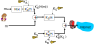
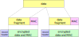
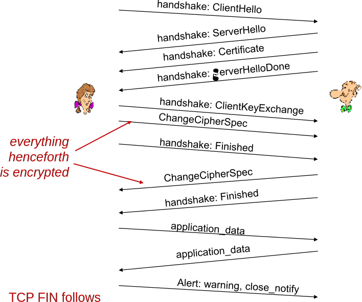

Terceira parte confiável certifica autenticidade da chave.
CA: Certification Authority.
Emite um “documento” verificável contendo a chave.
Assinado digitalmente com a chave privada da CA.
Certificação de chave pública: verificação.
Alice obtém certificado de Bob.
Alice verifica assinatura digital com a chave pública da CA.
Alice obtém chave pública de Bob.
Certificados raiz:
Certificados previamente conhecidos.
Confiança implícita na sua autenticidade.
Contém chaves públicas de CAs.
Hierarquia de Certificados:
Alice pode precisar verificar uma cadeia de certificados.
CAn certifica CAn-1, que certifica CAn-2, ..., que certifica Bob.
Certificados apresentam validade.
CAs podem revogar certificados.
PKI: Public Key Infrastructure.
Infraestrutura para distribuir/verificar chaves públicas.
Exemplo: CAs + Certificados.
Na Última Aula... (II)
Diffie-Hellman:
Método para estabelecimento seguro de chaves compartilhadas.
Não requer conhecimento prévio das partes.
Partes concordam em parâmetros não secretos p e g.
Também enviam em texto plano A = ga mod p e B = gb mod p.
a e b são mantidos secretos.
Chave compartilhada é s = Ba mod p = Ab mod p.
Sem método de autenticação, é susceptível a ataque man-in-the-middle.
E-mail seguro: diferentes possíveis objetivos.
Confidencialidade: chave simétrica de sessão, cifrada com chave pública do destinatário.
Integridade e Autenticidade: assinatura digital com chave privada.
Conexões TCP Seguras: SSL
SSL: Secure Sockets Layer
Protocolo de segurança amplamente implantado.
Suportado por quase todos os browsers, servidores web.
HTTPS
Bilhões de $/ano são transacionados sobre SSL.
Mecanismos: [Woo 1994], implementação: Netscape.
Variação — TLS: Transport Layer Security, RFC 2246.
Provê:
Confidencialidade.
Integridade.
Autenticação.
Objetivos originais:
Suporte a transações de e-commerce pela Web.
Criptografia (especialmente para números de cartões de crédito).
Autenticação do servidor web.
Opcionalmente, autenticação do cliente.
Resultar em um mínimo de dificuldade em realizar negócios com novos vendedores.
Disponível a qualquer aplicação TCP.
Interface de socket seguro.
SSL e TCP/IP
SSL provê uma API para aplicações.
Bibliotecas/classes prontamente disponíveis para C e Java (e a maioria das linguagens).
Funcionamento Poderia ser Similar ao PGP

Mas desejamos enviar fluxos de bytes e dados interativos.
Queremos conjuntos de chaves secretas para toda a duração da conexão.
Queremos troca de certificados como parte do protocolo: handshake.
SSL (Muito) Simplificado: Um Canal Seguro Simples
Handshake: Alice e Bob usam seus certificados, chaves privadas para se autenticar um com o outro e estabelecer uma chave secreta compartilhada.
Derivação das chaves: Alice e Bob usam chave secreta compartilhada para derivar um conjunto de chaves.
Transferência de dados: dados a serem transferidos são quebrados em uma série de registros.
Fechamento da conexão: mensagens especiais usadas para fechar conexão de forma segura.
SSL (Muito) Simplificado: Handshake Simplificado
MS:Master Secret.
EMS: Master Secret cifrado.
SSL (Muito) Simplificado: Derivação das Chaves
Considera-se ruim a utilização de uma mesma chave para mais de uma operação criptográfica.
Usam-se chaves diferente para o MAC (Message Authentication Code) e a criptografia.
Quatro chaves:
KC: chave de criptografia para dados enviados do cliente para o servidor.
MC: chave para o MAC dos dados enviados do cliente para o servidor.
KS: chave de criptografia para dados enviados do servidor para o cliente.
MS: chave para o MAC dos dados enviados do servidor para o cliente.
Chaves derivadas a partir de uma função de derivação de chaves (KDF).
Recebe o master secret e (possivelmente) outros dados aleatórios e cria as chaves.
SSL (Muito) Simplificado: Registros de Dados
Por que não cifrar dados em um fluxo constante à medida que estes são escritos no socket TCP?
Onde seria colocado o MAC? Se no final, nenhuma verificação de integridade seria realizada até que todos os dados fossem processados.
e.g., aplicação de mensagens instantâneas, como realizar verificação de integridade sobre todos os bytes enviados antes de mostrá-los?
Ao invés disso, quebrar o fluxo em sequência de registros.
Cada registro carrega um MAC.
Receptor pode trabalhar em cada registro isoladamente, à medida que estes chegam.
Problema: dentro de um registro, receptor precisa distinguir MAC dos dados.
Queremos usar registros de tamanho variável.
SSL (Muito) Simplificado: Números de Sequência
Problema: atacante pode capturar e repetir registro, ou mesmo reordenar registros.
Solução: inserir número de sequência no MAC:
MAC = MAC(Mx, sequência || dados).
Nota: não existe um campo para o número de sequência.
Problema: atacante pode repetir todos os registros.
Solução: utilização de nonce.
SSL (Muito) Simplificado: Informações de Controle
Problema: ataque baseado em truncagem de dados.
Atacante forja segmento de fechamento de conexão TCP.
Um ou ambos os lados pensam que há menos dados do que na verdade há.
Solução: tipos de registro, com um tipo especial para fechamento.
Tipo 0 para dados, tipo 1 para fechamento.
MAC = MAC(Mx, sequência || tipo || dados).
SSL (Muito) Simplificado: Sumário
SSL (Muito) Simplificado: Ainda Incompleto
Qual é o tamanho dos campos?
Quais algoritmos de criptografia?
Negociação é desejável?
Permitir que cliente e servidor suportem diferentes algoritmos de criptografia.
Permitir que escolham em conjunto um algoritmo específico antes da transmissão dos dados.
SSL: Suíte de Cifras
Suíte de cifras.
Algoritmo de chave pública.
Algoritmo de chave simétrica.
Algoritmo de MAC.
SSL suporta várias suítes de cifras.
Negociação: cliente, servidor concordam em usar uma suíte específica.
Cliente oferece opções.
Servidor escolhe uma.
Cifras simétricas comumente utilizadas pelo SSL:
DES — Data Encryption Standard: bloco.
3DES — Triple Data Encryption Standard: bloco.
RC2 — Rivest Cipher 2: bloco.
RC4 — Rivest Cipher 4: fluxo
Criptografia de chave pública do SSL:
RSA.
SSL Real: Handshake (I)
Propósito:
Autenticação do servidor.
Negociação: concordar no conjunto de algoritmos de criptografia.
Estabelecimento das chaves de sessão.
Autenticação do cliente (opcional).
SSL Real: Handshake (II)
Cliente envia lista de algoritmos que ele suporte, juntamente de um nonce do cliente.
Servidor escolhe algoritmos a partir da lista; envia de volta: escolhas + certificado + nonce do servidor.
Cliente verifica certificado, extrai chave pública do servidor, gera um pre_master_secret, o cifra com a chave pública do servidor, envia o resultado ao servidor.
Cliente e servidor computam independentemente chaves de criptografia e MAC a partir do pre_master_secret e dos nonces.
Cliente envia um MAC de todas as mensagens de handshake.
Servidor envia um MAC de todas as mensagens de handshake.
SSL Real: Handshake (III)
Últimos dois passos protegem o handshake de adulterações.
Cliente tipicamente oferece uma gama de algoritmos, alguns fortes, outros fracos.
Ataque de man-in-the-middle poderia remover algoritmos mais fortes da lista.
Últimos dois passos evitam isso.
Duas últimas mensagens são cifradas.
SSL Real: Handshake (IV)
Por que dois nonces?
Assuma que Trudy é capaz de ouvir todas as mensagens entre Alice e Bob.
No próximo dia, Trudy inicia conexão TCP com Bob, enviando exatamente a mesma sequência de registros.
Bob (Amazon) pensa que Alice fez dois pedidos separados para um mesmo item.
Solução: Bob envia um nonce aleatório diferente para cada conexão. Com isso, chaves de criptografia são diferentes nos dois dias.
Mensagens enviadas por Trudy não passarão na verificação de integridade de Bob.
SSL Real: Protocolo Usado nos Registros

Record Header: tipo do conteúdo, versão, tamanho.
MAC: inclui número de sequência, chave MAC Mx.
Fragment: cada fragmento SSL tem 214 bytes (~ 160 kB).
SSL Real: Formato do Registro
Dados e MAC criptografados (algoritmo de chave simétrica).
Exemplo de Conexão SSL Real

Derivação de Chaves
Nonces do cliente e do servidor e pre_master_secret são passados como entrada para algoritmo de geração de números pseudo-aleatórios.
Produz o master secret.
O master secret e nonces são passados como entrada de outro gerador de números: “bloco de chaves”.
Permite “restabelecimento de sessão” usando novos nonces.
Economiza processamento do RSA no handshake.
Bloco de chaves é repartido em componentes:
Chave MAC do cliente.
Chave MAC do servidor.
Chave de criptografia do cliente.
Chave de criptografia do servidor.
Vetor de inicialização do cliente (IV).
Vetor de inicialização do servidor (IV).
Resumo da Aula...
SSL: Secure Sockets Layer.
“TCP Seguro”.
Amplamente difundido na Internet.
Suporte nativo de browsers.
Base do HTTPS.
Pode ser entendido como uma camada de segurança entre TCP e aplicação.
SSL provê:
Confidencialidade, integridade, autenticação.
SSL: fases.
Handshake: autenticação, escolha de cifras, segredo compartilhado.
Derivação de chaves: 4 chaves.
Transferência de dados: em registros.
Fechamento de conexão: importante, mensagens especiais.
SSL: handshake.
Múltiplas cifras suportadas: negociação.
Nonces impedem ataques de repetição.
SSL: registros.
Tamanho variável.
Campos: tamanho, tipo, versão.
Registros possuem MACs individuais.
Computado sobre dados, cabeçalho e número de sequência implícito.
Número de sequência evita ataques do tipo man-in-the-middle.
SSL: autenticação.
Feita através de certificados.
Leitura e Exercícios Sugeridos
SSL:
Páginas 521 a 525 do Kurose (Seção 8.5).
Exercícios de fixação 20, 21, 22 e 23 do capítulo 8 do Kurose.
Problemas 19, 20 e 21 do capítulo 8 do Kurose.
Próxima Aula...
SSL é uma solução de segurança na camada de transporte.
Na próxima aula, discutiremos segurança na camada de rede: